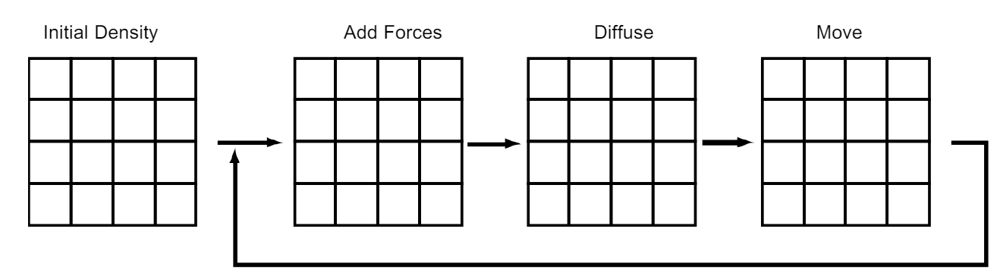
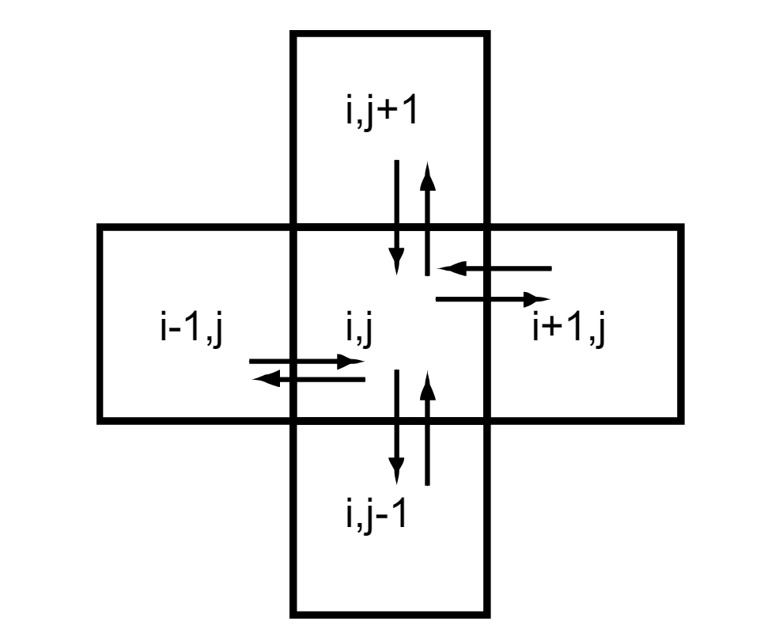
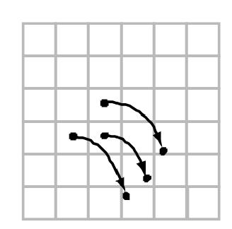

In this project, we've implemented a 3-dimensional interactive smoke simulator using the Eularian based method. Rather than using particle physics, we discretize smoke effects by using a grid that holds the density of a fluid. To simulate physical effects, we use another grid to hold a velocity field, which is interactive. The entire project is based off the cloth simulator project, and uses pointmasses as the grid to render different smoke effects.
To implement a smoke simulator, we must understand the physics of fluid. The physics of fluid must follow the Navier-Stokes Equations, which model fluid flows in nature, for example smoke. These equations are: $$\nabla \cdot u = 0$$ $$\frac{\partial u}{\partial t} = -(u \cdot \nabla)u - \frac{1}{\rho}\nabla p + \nu \nabla^2 u + f$$ The first equation simply states that mass is conserved, while the second states Newton's second law $F = ma$. While these equations may look daunting at first, we used Jos Stam's simplified grid approach to implement a solver for these fluids.
|

|
At each timestep, we apply these steps to our density. The grid based method allows for (relatively) fast computations and is simpler to implement. For the 3-dimensional setting, our infrastructure consists of a 3 dimensional grid with lengths $N_x, N_y, N_z$, which are adjustable by the user. It should be noted as one increases the size of the grid, the more computation that takes place, as the runtime of each timestep is $O(N_xN_yN_z)$. To alleviate this, since much of the comptutation is iteration across each grid, we used OpenMP parrarelism. In general though, our solver uses three main functions: diffusion, advection, and projection.
The intuition behind Diffusion is relatively simple. For a diffusion rate $d > 0$, density will spread across all neighbors of a grid cell.
|

|
|

|
The velocity solver consists of the addition of forces (from a mouse), viscous diffusion, and self-advection. Self-advection can be interpretted as the diffusion and advection of the velocity field itself. However, the evolution of the velocity field must conserve mass, as illustrated by the first equation of Navier-Stokes so the solver doesn't explode. To do this, we use the Hodge decomposition, which states that any velocity field is the sum of a mass conserving field and a gradient field. With this mass-conserving field, we can project the velocity field to be the mass-conserving field. However, to do this, we must solve for the gradient field. Once we solve for the gradient field, we can subtract it from our original velocity field to get our wanted mass-conserved field. To solve for the gradient field, we must solve a linear system called the Poisson equation. Similar to our diffusion code though, we can apply the Gauss-Seidel relaxation for linear systems.
The introduction of velocity fields gives much more freedom to the physics of fluids, especially with forces. One of these is curling effects, which allows for rotational flows, commonly known as vorticity. This can be done by using the gradient dot operator on each of our vectors in the vector field, and normalizing it to get a normalized vorticity field $\Psi$. Mathematically speaking, this is: $$\Psi = \frac{\eta}{|\eta|}, \eta = \nabla |\omega|, \omega = \nabla \cdot u$$ We can then apply the restorative force, which is defined to be: $$f_{vc} = \epsilon(\Psi \times \omega)\delta x$$
Our project varied in that most other implementations implemented fluids and smoke in 2 dimensions rather than 3-dimensions. This pushed us to used clothsim rather than using other infrastructures such as javascript, because of the speed of C++. We leveraged the pointmasses in the Clothsim project, and built a grid of pointmasses to represent the density of our smoke. Some of the problems we encountered were translating a lot of code from 2-D to 3-D and working in 3-D. Since most of the sources we found were 2-D implementations of fluid solvers, the algorithms were not direclty translated easily. Some things like bilinear interpolation, grid-indexing, and diffusion algorithms had to be moved to a 3-D context rather than a 2-D context. Furthermore, since we were implementing a 3-D fluid solver, the implementation of shaders was not immediately obvious, which caused us to not be able to use shaders in our project. We believe the usage of shaders would make our simulator much faster, but since most of the references online use shaders in a 2-D context, we couldn't figure out in the allotted time how to use shaders in the 3-D context. We still pushed forward with C++ though, even if it was still slow. We tried to alleviate the speed of our simulator using OpenMP to speed up our for loops, which did help. However, due to the serial nature of our code, we had to keep our smoke simulator size to be less than 50 units for a smooth experience. One of the biggest lessons we learned was how to start working from a codebase. We as a group had no idea how the clothsim pipeline worked when using clothsim, so we had to take a large amount of time understanding how the pipeline worked before we could even start coding any type of smoke simulator. Another thing we learned was how to code physics based systems in a simplified matter. Rather than coding the exact mathematical formulas, we learned how to code physics equations in discrete settings intuitively, rather than copying equations line for line.
Michael Huang: Implemented diffusion code and advection code. Made milestone website and final website.